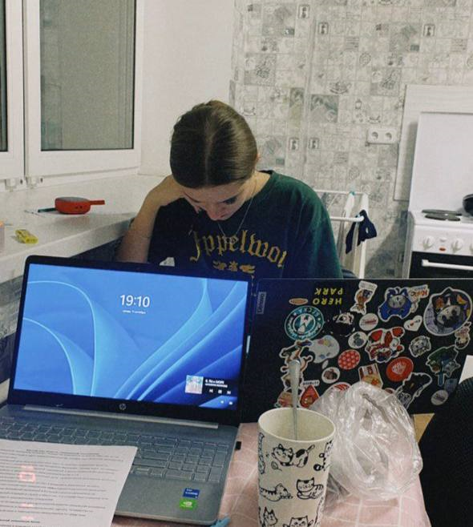
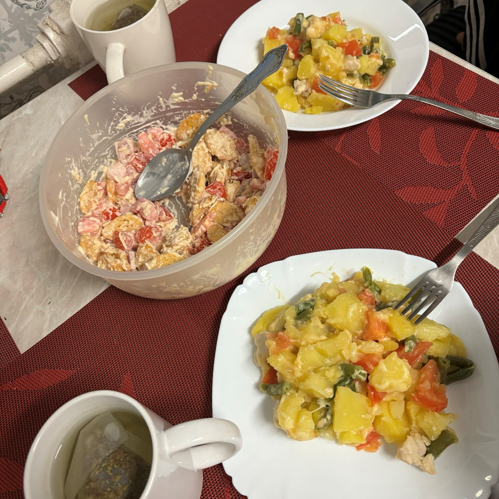

МОИ ХОББИ

Web-design
Занимаюсь веб-дизайном с 2020 года, а сделанных проектов десятки:
от сайта строительной компании до лендинга мастера по татуажу.

Читаю книги
Мои самые любимые книги - английская классика.
А самая любимая писатель - Джейн Остин.
А книга - Гордость и предубеждение.

Готовлю с Дашей
Мы каждый день готовим разные блюда, чтобы наше питание было разнообразным.
Ведь в обащаге сложно следить за питанием.